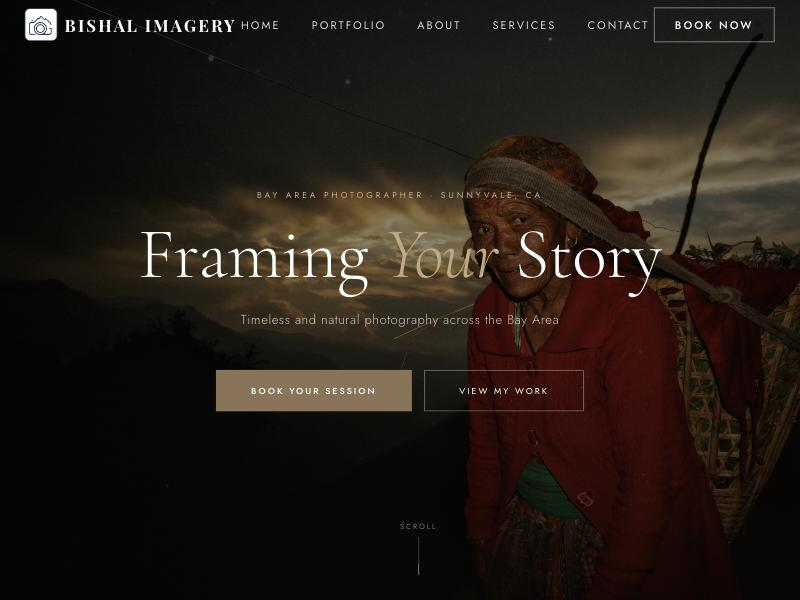
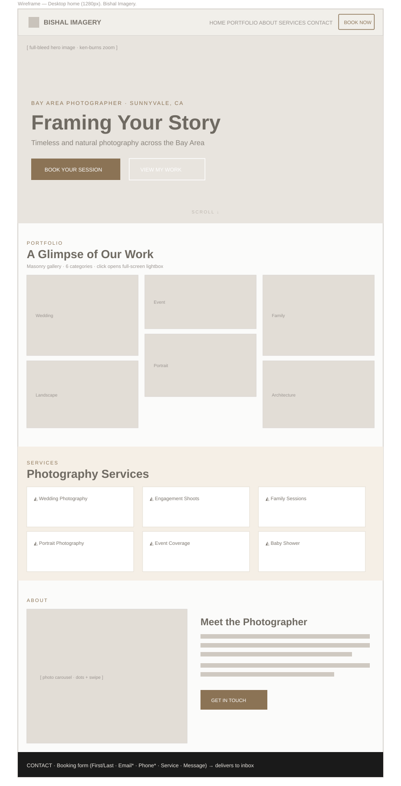
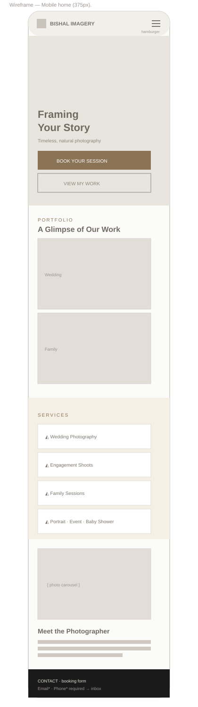
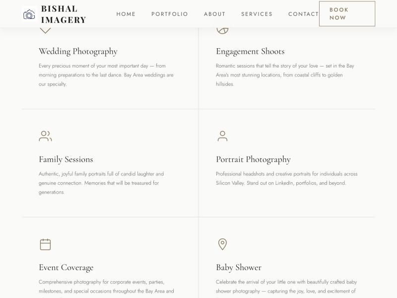
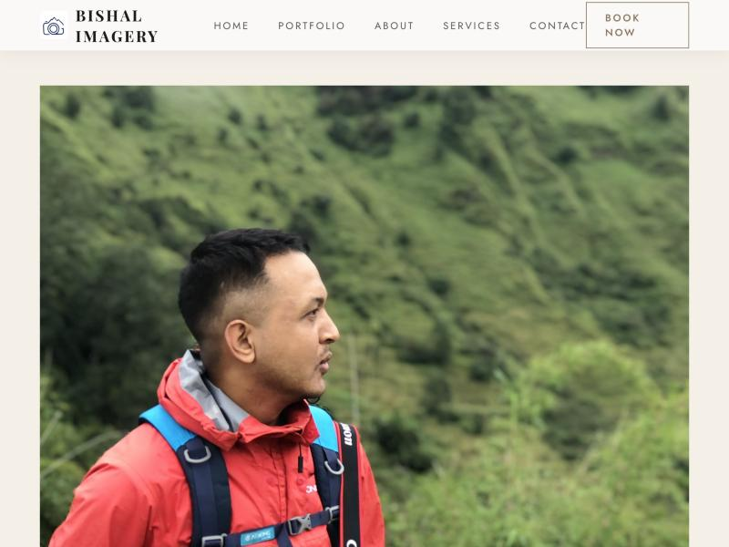
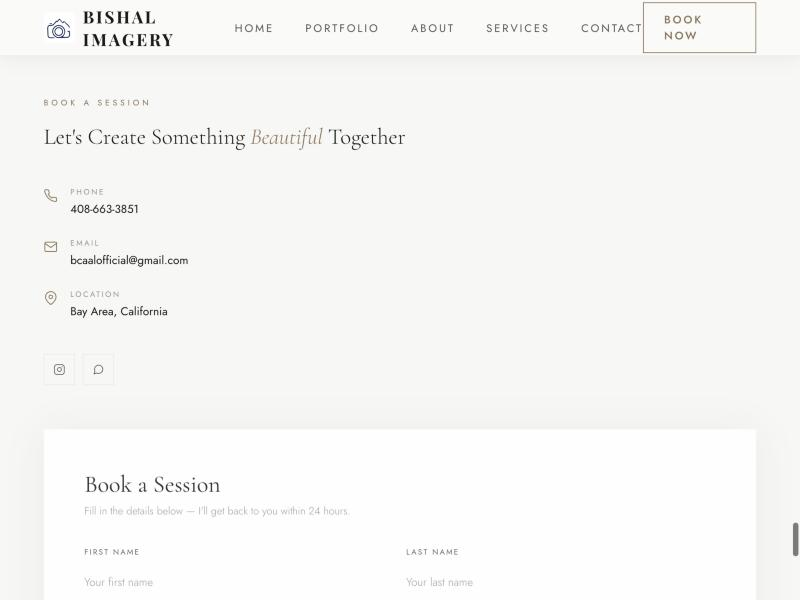

Bishal Imagery
A bookings-ready website for a Bay Area photographer: a gallery that lets the work breathe, and an inquiry form that turns visitors into leads.

Design thinking
- 1Empathize
Bishal shoots weddings and portraits across the Bay Area, but had no professional site and no way to be found or booked.
- 2Define
Three jobs: show the work, be discoverable for “Bay Area photographer”, and capture bookings.
- 3Ideate
One scroll mapped to how a client decides, in a calm, gallery-like style so the photos stay the hero.
- 4Prototype
Desktop and mobile wireframes locked structure and spacing before a single photo went in, then the build.
- 5Test
Tested form delivery end to end, then launched on a custom domain with HTTPS and structured data.
A working photographer with no way to be found, or booked.
Goal: turn a curious visitor into a booking inquiry with zero friction.
Flow chart
- Hero
- Portfolio
- Services
- Testimonials
- About
- Booking form
- Inquiry delivered
Wireframe
Low-fidelity desktop and mobile wireframes set the section order and the generous spacing before any photography.


User interface
A warm, earthy palette and an editorial serif and sans pairing. The interface recedes so the imagery carries the emotion.
Six services on an airy grid, each with a soft icon and one honest line, and a validated “Book a Session” form.



Testing: before and after
Before: a “thank you” showed, but every inquiry was silently discarded. After: delivered to the owner's inbox, with email and phone required and real success and error states.
Before: arrow buttons overlapped the photo, and the domain showed “Site not found”. After: clean dots and swipe, live on a custom domain with HTTPS.
Design system
Colour
- Paper#FBFAF7
- Sand#F5EFE6
- Light#C4A882
- Accent#8B7355
- Ink#1A1A1A
Type
Quality
- Required email and phone
- Success and error states
- Schema.org local business
- HTTPS
- Large uncluttered images
Outcome
A real business, online and taking inquiries. The most meaningful fix wasn't cosmetic: making sure no lead gets lost.